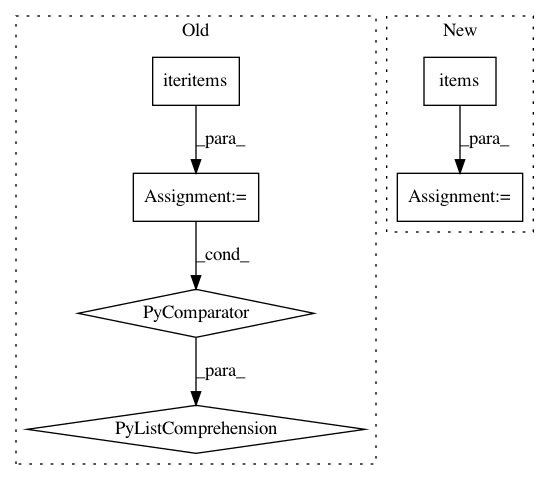

751ff35eb5faa6460038bb20a1ef6bfcf29f440a,jieba/analyse/__init__.py,,extract_tags,#Any#Any#Any#,62
Before Change
continue
freq[w] = freq.get(w, 0.0) + 1.0
total = sum(freq.values())
freq = [(k,v/total) for k,v in freq.iteritems()]
tf_idf_list = [(v*idf_freq.get(k,median_idf), k) for k,v in freq]
st_list = sorted(tf_idf_list, reverse=True)
if withWeight:
tags = st_list[:topK]
else:
top_tuples = st_list[:topK]
tags = [a[1] for a in top_tuples]
return tags
After Change
freq[k] *= idf_freq.get(k, median_idf) / total
if withWeight:
tags = sorted(freq.items(), key=itemgetter(1), reverse=True)
else:
tags = sorted(freq, key=freq.__getitem__, reverse=True)
if topK:
return tags[:topK]
In pattern: SUPERPATTERN
Frequency: 3
Non-data size: 6
Instances
Project Name: fxsjy/jieba
Commit Name: 751ff35eb5faa6460038bb20a1ef6bfcf29f440a
Time: 2014-10-31
Author: abcdoyle888@gmail.com
File Name: jieba/analyse/__init__.py
Class Name:
Method Name: extract_tags
Project Name: SheffieldML/GPy
Commit Name: 6aca7c2765ef4e81d93e929510d12778a5ed5331
Time: 2015-03-02
Author: michael.p.croucher@googlemail.com
File Name: GPy/core/parameterization/index_operations.py
Class Name: ParameterIndexOperationsView
Method Name: items
Project Name: matplotlib/matplotlib
Commit Name: 42ee3ac541b6699d233873f84bf5f96d7846cb01
Time: 2018-03-19
Author: anntzer.lee@gmail.com
File Name: lib/matplotlib/axis.py
Class Name: Tick
Method Name: _apply_params